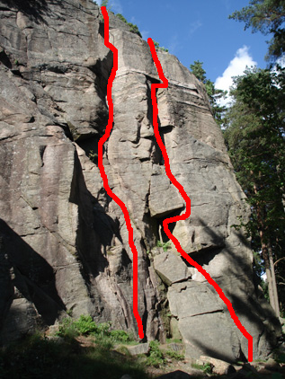

Gärdsås
Lat: 57.74851113860408
Long: 12.052774429321289
Kategori:2 stjärnor
Allmänt
Det förlovade landet för femma-klättrare. Ca 40 leder, varav massor av fina leder i lättare grader. Bra ställe att öva tradklättring. Lättillgängligt och barnvänligt. Hamnar i skugga framåt kvällen, men svalkande träd gör det ok att vistas där även dagtid. Firningsankare finns ovanför Start och Speed samt Vårtecknet. Parkera inte på Ungmästaregatan.
Introduktion

Tänk på ljudnivån då klättringen sker alldeles intill bebyggelse, se Access nedan. Parkera inte på Ungmästaregatan!
Nedstigning finns dels genom att ta sig till höger till cykelvägen. Dels kan man navigera sig ned på en brant stig till vänster om Älgens överskning.
Karaktär
Varierat med bland annat stora tak. Mestadels vertikalt med enstaka ramper som erbjuder flack nybörjarklättring. Trad. Två limbultsankare huvudsakligen för firning, försedda med ring och "maillon rapide", fira i ringen, toppa i egna karbiner. Sätt inte upp nya bultar i Gärdsås, det är så fint som klätterberg som det är utan bultar!
Vägbeskrivning
<googlemap lat="57.74851113860408" lon="12.052774429321289" zoom="14" type="karta">
57.74851113860408,12.052774429321289,Gärdsås
</googlemap>
Parkera längs Gärdsåsgatan, Kamgatan.
Parkera INTE vid återvinningsstationen på Ungmästaregatan
, vilket angetts här tidigare.
Gå upp och ta vänster på Sockerbagaregatan. Gatan blir cykelväg, sedan ser du klippan.
Access
Klättringen sker väldigt nära villatomter. I vänstra delen av området klättrar man bokstavligen rakt ovanför nån stackare som försöker läsa tidningen i lugn och ro på sin gräsmatta. Ropa inte i onödan och låt bli alla svordomar och annat oskick! Tänk även på parkeringen, Parkera inte på Ungmästaregatan.
Jannes hörn
Tänk på att hålla ljudnivån nere på alla leder fram till Jennys grej, hus mycket nära!
-
- Dolomiti
- 5+
- Ovanlig klättring på kristallin klippa.
-
- Vårtecknet
- 5
- Längst in i hörnet, har ett firningsankare
-
- Not without my friends
- 6-
-
-
- Jannes hörn
- 7-
- Spricka med brant layback på slutet.
-
- Det eviga projektet
- 7+
- Projekt
Bikupan
-
- Bitsk
- 6+
- Där Bikupan svänger av till vänster efter någon meter, fortsätt rakt upp i diedret och upp igenom taket (krux) på vänster sida.
-
- Älgens överaskning
- 5+
- Luftig men välsäkrad.
-
- Luftmadrassen
- 5+
- Till höger om Älgens överaskning. Flack diederklättring upp till första taket. Gå genom detta och upp till nästa tak, här traverserar du vänster. Luftig men välsäkrad.
-
- Yesterday
- 5
- Samma start som Luftmadrassen men traverserar höger vid första bästa tillfälle och därefter rakt upp.
-
- Syjuntan
- 6
- Aréten höger om Luftmadrassen. Tyvärr har kruxet efter insteget markfallspotensial, 'buyer beware'. I övrigt en bra led på arétens vänstersida. Slutar på hylla strax under toppen. Notera att Syjuntan aldrig går samman med Yesterday.
-
- Toms överraskning
- 5+
- Det sitter en fast 'säkrings grej' i den breda sprickan i slutet.
-
- Set
- 5+
- Vänsterlutande spricka.
-
- Game
- 5
- Startar på samma ställe som Set men fortsätter i spricksystemet upp höger efter någon meter.
Start och Speed
-
- Betongsång
- 6-
- Start som Dominikas. Vid det breda suspekta blocket gå rakt upp på väggen längs vaga sprickor.
-
- Jappe
- 5
- Sprickklättring med ett och annat bök.
-
- Jug
- 5
- Laybacka, stäm, ta i. Juggen kommer så småningom.
-
- Start och speed
- 6
- Uppför ramp höger om areten, sedan runt areten i svårsäkrat krux. Därefter förvånansvärt välsäkrad väggklättring. En lite krystad instegsvariant (grad 7) finnes. Startar vänster om areten och har en bult.
-
- Pi kuan
- 5+
- Någon av sprickorna höger om rampen och upp till det stora blockets högerkant. Gå rakt upp eller traversersa vänster under blocket. Sedan lite svårsäkrad stämklättring efter hyllan. (Varianten som börjar i samma ramp som Start och Speed är relativt svårsäkrad.
Tien Tsin
-
- Sträckfisk
- 7-
- Känslig klättring i ett litet dieder. Tunn tarvers åt höger mot areten, följt av den vänstra sprickan mot toppen. Troligen seriös i första halvan.
-
- Lutfisk
- 7
- Som Sträckfisk tills efter traversen, sedan upp i den högra sprickan. Tung men fin klättring på riktiga grepp.
-
- Tien-tsin
- 7
- Varierad klättring upp i det vänstra av de två stora diedren. Tunga handjam när det brantar till sig.
-
- China corner
- 6+
- Stämklättring i det högra stora diedret. Relativt välsäkrat, liten Alien kan göra kruxet behagligare.
-
- Centralpelaren
- 6+
- Elegant när du traverserar ut på pelaren i början. Sedan lite ojämnt men fint. Välsäkrat.
Nurejev
-
- Leden som gud glömde
- 6-7 (morfo)
- Leden startar längst in i hörnet, under blocket som har kalvat bort, längs med taket. Välsäkrad med stora kila/hexor/tricams, rensas enklast ovanifrån.Inget för den storväxte.
-
- Ett hål i mitt hjärta
- 6
- Samma start som Travolta, efter ca 4 m ut vänster via sprick-krysset till arèten. Sedan rakt upp till nästa spricksystem och utsteget. Varierande och fin.
-
- Travolta
- 7-
- Följer de två pararella sprickorna, klurig start till avsevärt lättare men mindre välsäkrat slut.
-
- Baryshnikov
- 6
- Klättring på ganska grova grepp, balansigt och akrobatiskt. Inte överdrivet säkrat.
-
- Nurejev
- 6+
- Juggig catch-start i överhänget. Variantstart till höger av Jan P något senare.
-
- Mowgli
- 4+
- Fin övning för aspirerande lead-klättrare. Kan rekommenderas!
-
- Bakfylleleken
- C3
- Startar i den tydliga diedret till höger om Mowgli. Rakt upp till tvärsprickan, traversera höger till taket. Klättra genom taket längst den tunna sprickan (krux). Små kilar. Utsteget är kanske grad 5 (osäkrad) eller flera hookar i rad. Ta med RPs, hooks och normalt frirack. Eventuellt någon pecker för handplacering.
-
- Gulbrunt
- 5+
- Det svaga diedret/flaket till vänster om Blåvitt. Klättra detta och sedan rakt över bullen.
-
- Blåvitt
- 6
- Blåvitt hittas om du fortsätter cykelvägen i riktning mot fotbollsplanen, strax innan cykelvägen delar sig till vänster.
category:Barnvänligt
category:trad
category:Vertikalt
Kategori:Göteborg